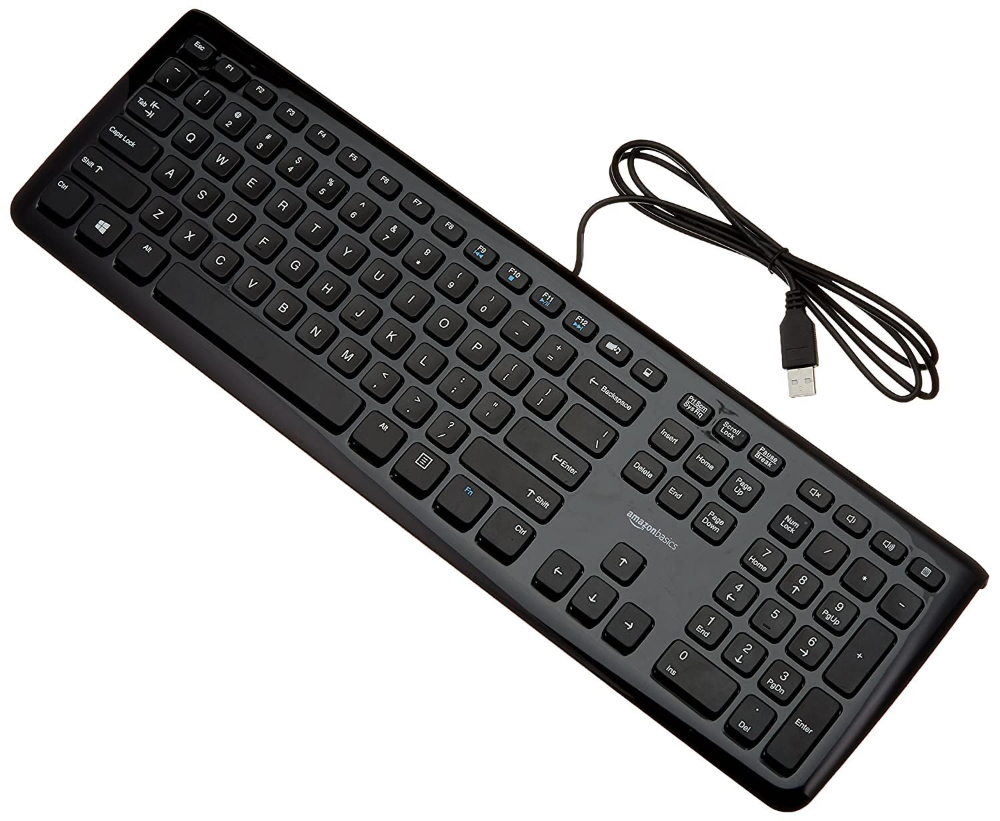
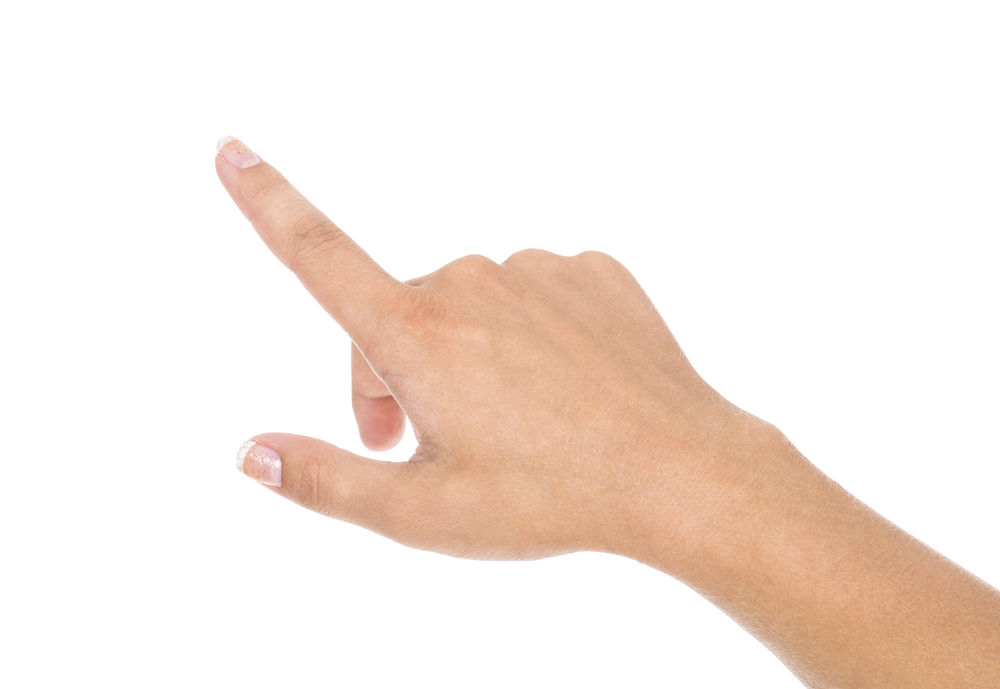
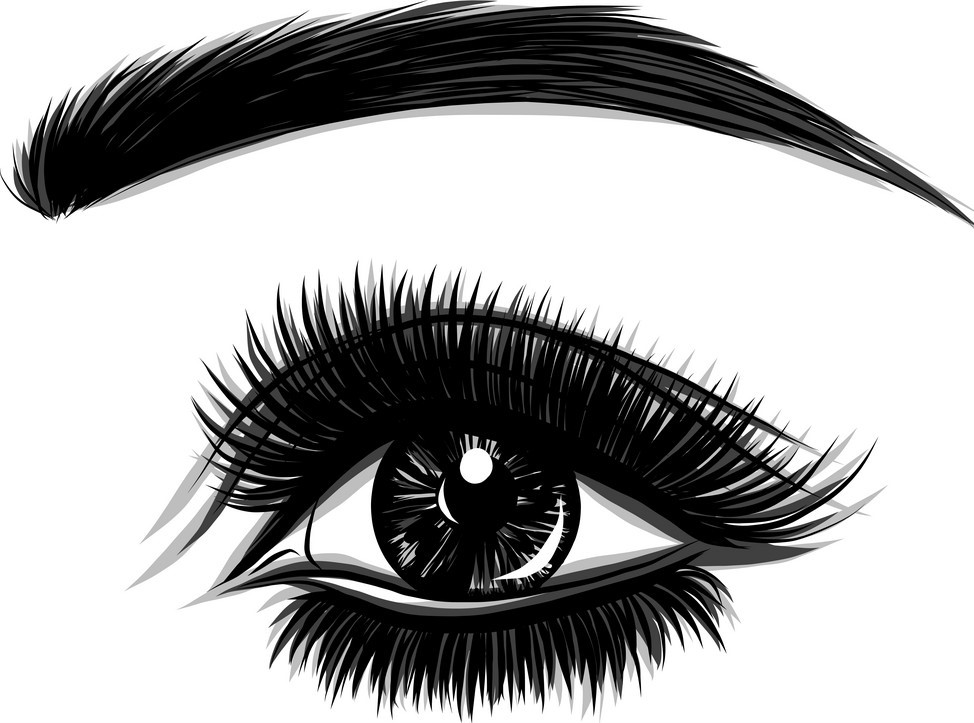
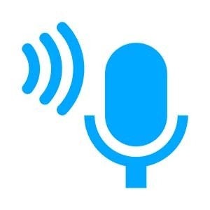
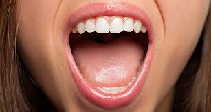
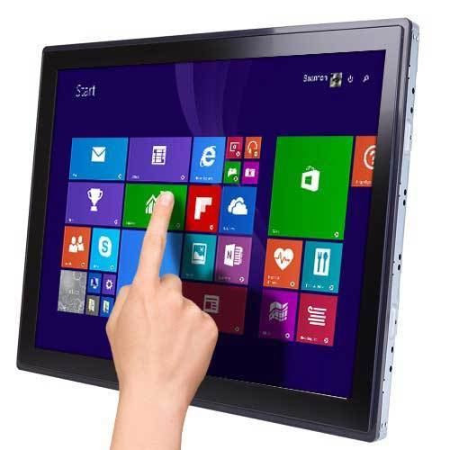

Most popular and dominant pointing deviceEasy to use, faster navigation, has a large technical support.Occupies additional physical space, can not be used by handicapped STANDARD

Keyboard keys
Basically an input device, Can be used as a mouse Fast, accurate, no additional device or technology requiredNot very user friendly, navigation is highly difficult8%

Hand Gesture
Not used in general PCs, highly used in gaming computersWide range of applications because of large number of hand movements, physical touch avoided. Accuracy affected by Webcam, different hand sizes. 26%

Only Eye Gestures
Not in common use Can be used by Disabled, Allows usage when touch has to be avoided Not very accurate, designing is difficult, little applications due to less ways of movement11%

Speech Recognition
Use increases a lot in past few years Easy for those having difficulty in typing, very user friendly.Speech clarity required, additional background sound can affect the detection, language and accent support needed.8%

Only Mouth Gestures
Not in common useCan be used by handicapped, no physical touch interaction needed.Low accuracy and speed, awkward according to social norms. 3%

Touch Screen
In common use in smartphones. Not very popular in desktops and laptops Large technical support present, highly user friendly, Direct navigation Surface may get dirty, Finger precision needed, Costly for desktops32%
Mixed facial Gestures
Not in common use, many researches going Useful for disabled, no physical touch needed, combines variety of means for interaction, user friendly design possible. Awkward to do in public, Webcam quality affects accuracy 13%